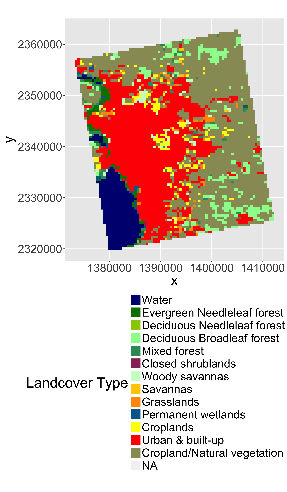
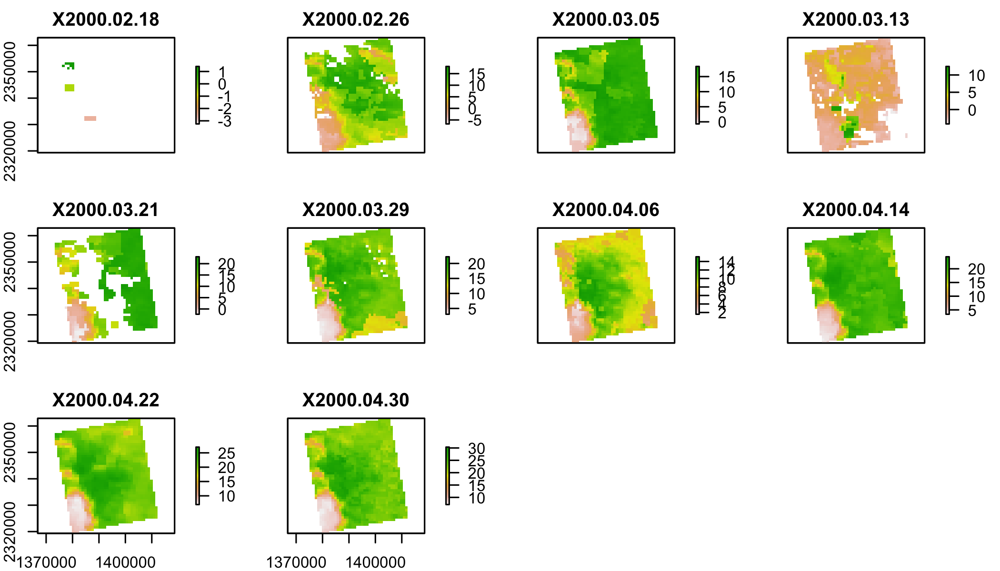
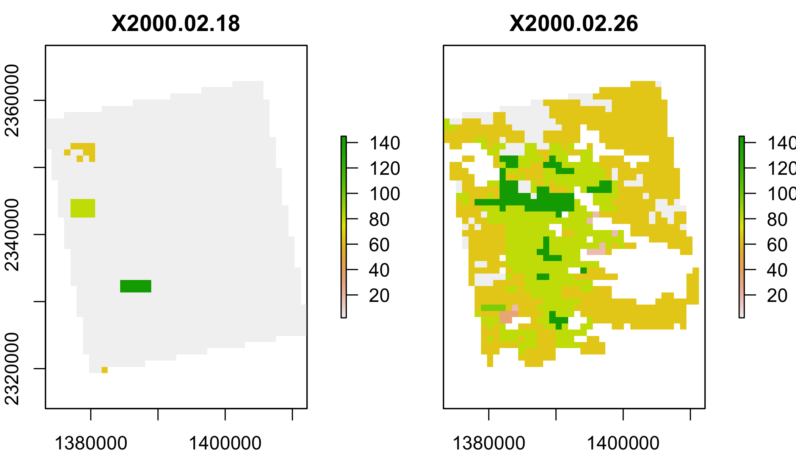
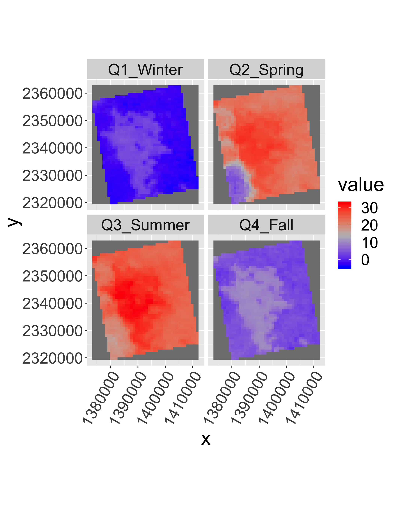
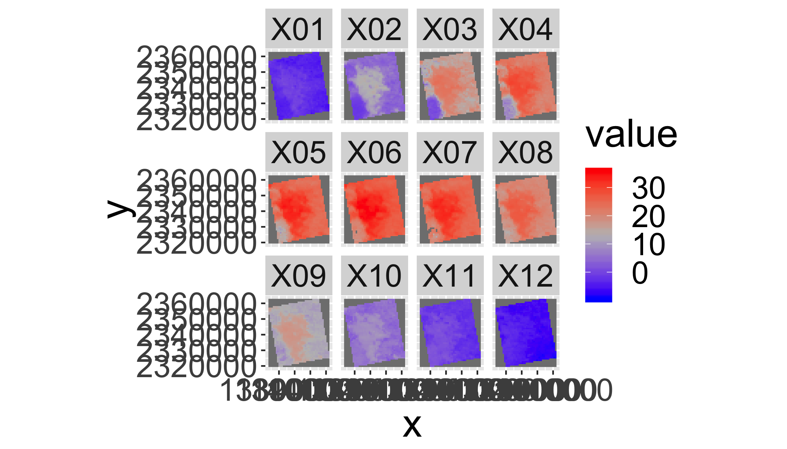
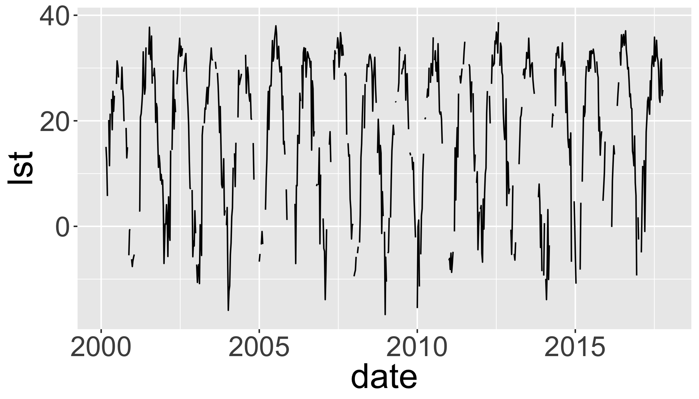
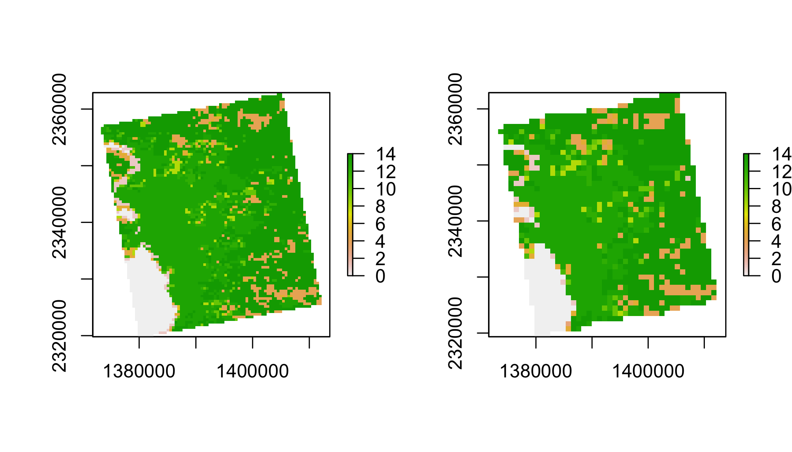
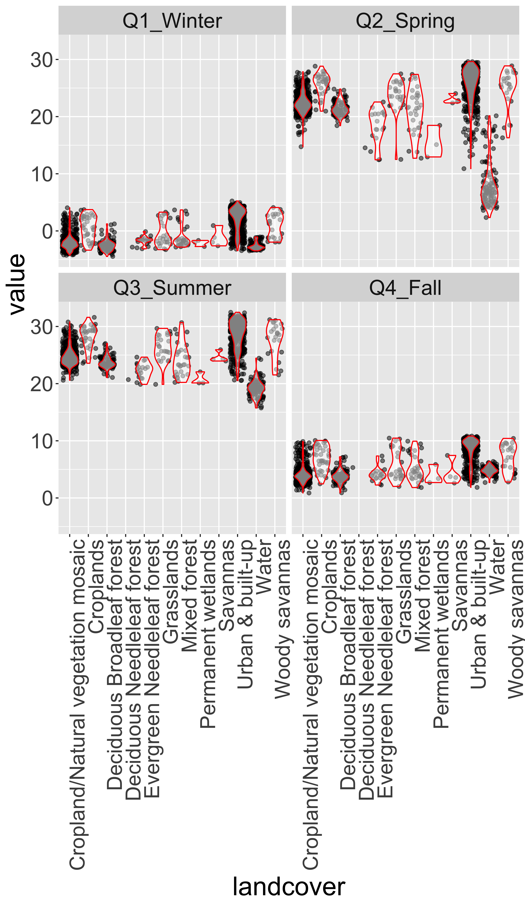

Satellite Remote Sensing
The R Script associated with this page is available here. Download this file and open it (or copy-paste into a new script) with RStudio so you can follow along.
Libraries
library(raster)
library(rasterVis)
library(rgdal)
library(ggplot2)
library(ggmap)
library(dplyr)
library(knitr)
library(tidyr)
library(DataScienceData)
# New Packages
library(gdalUtils)
library(rts)Identify (and create) download folders
Today we’ll work with:
- Land Surface Temperature (
lst): MOD11A2 - Land Cover (
lc): MCD12Q1
Land Use Land Cover
You will need to update the DataScienceData package before the command below will work. Run devtools::install_github("adammwilson/DataScienceData"); library(DataScienceData). If that doesn’t work, you can download the needed files directly from here.
lulcf=system.file("extdata",
"appeears/MCD12Q1.051_aid0001.nc",
package = "DataScienceData")
lulcf## [1] "/Library/Frameworks/R.framework/Versions/3.4/Resources/library/DataScienceData/extdata/appeears/MCD12Q1.051_aid0001.nc"#IF that doesn't worklulc=stack(lulcf,varname="Land_Cover_Type_1")
plot(lulc)
We’ll just pick one year to work with to keep this simple:
lulc=lulc[[13]]
plot(lulc)
Process landcover data
Get cover clases from MODIS website
Land_Cover_Type_1 = c(
Water = 0,
`Evergreen Needleleaf forest` = 1,
`Evergreen Broadleaf forest` = 2,
`Deciduous Needleleaf forest` = 3,
`Deciduous Broadleaf forest` = 4,
`Mixed forest` = 5,
`Closed shrublands` = 6,
`Open shrublands` = 7,
`Woody savannas` = 8,
Savannas = 9,
Grasslands = 10,
`Permanent wetlands` = 11,
Croplands = 12,
`Urban & built-up` = 13,
`Cropland/Natural vegetation mosaic` = 14,
`Snow & ice` = 15,
`Barren/Sparsely vegetated` = 16,
Unclassified = 254,
NoDataFill = 255)
lcd=data.frame(
ID=Land_Cover_Type_1,
landcover=names(Land_Cover_Type_1),
col=c("#000080","#008000","#00FF00", "#99CC00","#99FF99", "#339966", "#993366", "#FFCC99", "#CCFFCC", "#FFCC00", "#FF9900", "#006699", "#FFFF00", "#FF0000", "#999966", "#FFFFFF", "#808080", "#000000", "#000000"),
stringsAsFactors = F)
# colors from https://lpdaac.usgs.gov/about/news_archive/modisterra_land_cover_types_yearly_l3_global_005deg_cmg_mod12c1
kable(head(lcd))| ID | landcover | col | |
|---|---|---|---|
| Water | 0 | Water | #000080 |
| Evergreen Needleleaf forest | 1 | Evergreen Needleleaf forest | #008000 |
| Evergreen Broadleaf forest | 2 | Evergreen Broadleaf forest | #00FF00 |
| Deciduous Needleleaf forest | 3 | Deciduous Needleleaf forest | #99CC00 |
| Deciduous Broadleaf forest | 4 | Deciduous Broadleaf forest | #99FF99 |
| Mixed forest | 5 | Mixed forest | #339966 |
Convert LULC raster into a ‘factor’ (categorical) raster. This requires building the Raster Attribute Table (RAT). Unfortunately, this is a bit of manual process as follows.
# convert to raster (easy)
lulc=as.factor(lulc)
# update the RAT with a left join
levels(lulc)=left_join(levels(lulc)[[1]],lcd)## Joining, by = "ID"# plot it
gplot(lulc)+
geom_raster(aes(fill=as.factor(value)))+
scale_fill_manual(values=levels(lulc)[[1]]$col,
labels=levels(lulc)[[1]]$landcover,
name="Landcover Type")+
coord_equal()+
theme(legend.position = "bottom")+
guides(fill=guide_legend(ncol=1,byrow=TRUE))
Land Surface Temperature
lstf=system.file("extdata",
"appeears/MOD11A2.006_aid0001.nc",
package = "DataScienceData")
lstf
lst=stack(lstf,varname="LST_Day_1km")
plot(lst[[1:12]])
You may get a warning about some attributes being 8-byte converted to double precisions. You can ignore these warnings.
Convert LST to Degrees C
You can convert LST from Degrees Kelvin (K) to Celcius (C) with offs().
offs(lst)=-273.15
plot(lst[[1:10]])
MODLAND Quality control
See a detailed explaination here. Some code below from Steven Mosher’s blog.
MOD11A2 (Land Surface Temperature) Quality Control

lstqc=stack(lstf,varname="QC_Day")
plot(lstqc[[1:2]])
LST QC data
QC data are encoded in 8-bit ‘words’ to compress information.
values(lstqc[[1:2]])%>%table()## .
## 2 17 33 65 81 97 145
## 1569 8 5 675 335 4 90intToBits(65)## [1] 01 00 00 00 00 00 01 00 00 00 00 00 00 00 00 00 00 00 00 00 00 00 00
## [24] 00 00 00 00 00 00 00 00 00intToBits(65)[1:8]## [1] 01 00 00 00 00 00 01 00as.integer(intToBits(65)[1:8])## [1] 1 0 0 0 0 0 1 0MODIS QC data are Big Endian
| Format | Digits | value | sum |
|---|---|---|---|
| Little Endian | 1 0 0 0 0 0 1 0 | 65 | 2^0 + 2^6 |
| Big Endian | 0 1 0 0 0 0 0 1 | 65 | 2^6 + 2^0 |
Reverse the digits with rev() and compare with QC table above.
rev(as.integer(intToBits(65)[1:8]))## [1] 0 1 0 0 0 0 0 1QC for value 65:
- LST produced, other quality, recommend examination of more detailed QA
- good data quality of L1B in 7 TIR bands
- average emissivity error <= 0.01
- Average LST error <= 2K
Your turn
What does a QC value of 81 represent?
rev(as.integer(intToBits(81)[1:8]))## [1] 0 1 0 1 0 0 0 1# LST produced, other quality, recommend exampination of more detailed QA
# Other quality data
# Average emissivity error <= 0.01
# Average LST error <= 2KFilter the the lst data using the QC data
## set up data frame to hold all combinations
QC_Data <- data.frame(Integer_Value = 0:255,
Bit7 = NA, Bit6 = NA, Bit5 = NA, Bit4 = NA,
Bit3 = NA, Bit2 = NA, Bit1 = NA, Bit0 = NA,
QA_word1 = NA, QA_word2 = NA, QA_word3 = NA,
QA_word4 = NA)
##
for(i in QC_Data$Integer_Value){
AsInt <- as.integer(intToBits(i)[1:8])
QC_Data[i+1,2:9]<- AsInt[8:1]
}
QC_Data$QA_word1[QC_Data$Bit1 == 0 & QC_Data$Bit0==0] <- "LST GOOD"
QC_Data$QA_word1[QC_Data$Bit1 == 0 & QC_Data$Bit0==1] <- "LST Produced,Other Quality"
QC_Data$QA_word1[QC_Data$Bit1 == 1 & QC_Data$Bit0==0] <- "No Pixel,clouds"
QC_Data$QA_word1[QC_Data$Bit1 == 1 & QC_Data$Bit0==1] <- "No Pixel, Other QA"
QC_Data$QA_word2[QC_Data$Bit3 == 0 & QC_Data$Bit2==0] <- "Good Data"
QC_Data$QA_word2[QC_Data$Bit3 == 0 & QC_Data$Bit2==1] <- "Other Quality"
QC_Data$QA_word2[QC_Data$Bit3 == 1 & QC_Data$Bit2==0] <- "TBD"
QC_Data$QA_word2[QC_Data$Bit3 == 1 & QC_Data$Bit2==1] <- "TBD"
QC_Data$QA_word3[QC_Data$Bit5 == 0 & QC_Data$Bit4==0] <- "Emiss Error <= .01"
QC_Data$QA_word3[QC_Data$Bit5 == 0 & QC_Data$Bit4==1] <- "Emiss Err >.01 <=.02"
QC_Data$QA_word3[QC_Data$Bit5 == 1 & QC_Data$Bit4==0] <- "Emiss Err >.02 <=.04"
QC_Data$QA_word3[QC_Data$Bit5 == 1 & QC_Data$Bit4==1] <- "Emiss Err > .04"
QC_Data$QA_word4[QC_Data$Bit7 == 0 & QC_Data$Bit6==0] <- "LST Err <= 1"
QC_Data$QA_word4[QC_Data$Bit7 == 0 & QC_Data$Bit6==1] <- "LST Err > 2 LST Err <= 3"
QC_Data$QA_word4[QC_Data$Bit7 == 1 & QC_Data$Bit6==0] <- "LST Err > 1 LST Err <= 2"
QC_Data$QA_word4[QC_Data$Bit7 == 1 & QC_Data$Bit6==1] <- "LST Err > 4"
kable(head(QC_Data))| Integer_Value | Bit7 | Bit6 | Bit5 | Bit4 | Bit3 | Bit2 | Bit1 | Bit0 | QA_word1 | QA_word2 | QA_word3 | QA_word4 |
|---|---|---|---|---|---|---|---|---|---|---|---|---|
| 0 | 0 | 0 | 0 | 0 | 0 | 0 | 0 | 0 | LST GOOD | Good Data | Emiss Error <= .01 | LST Err <= 1 |
| 1 | 0 | 0 | 0 | 0 | 0 | 0 | 0 | 1 | LST Produced,Other Quality | Good Data | Emiss Error <= .01 | LST Err <= 1 |
| 2 | 0 | 0 | 0 | 0 | 0 | 0 | 1 | 0 | No Pixel,clouds | Good Data | Emiss Error <= .01 | LST Err <= 1 |
| 3 | 0 | 0 | 0 | 0 | 0 | 0 | 1 | 1 | No Pixel, Other QA | Good Data | Emiss Error <= .01 | LST Err <= 1 |
| 4 | 0 | 0 | 0 | 0 | 0 | 1 | 0 | 0 | LST GOOD | Other Quality | Emiss Error <= .01 | LST Err <= 1 |
| 5 | 0 | 0 | 0 | 0 | 0 | 1 | 0 | 1 | LST Produced,Other Quality | Other Quality | Emiss Error <= .01 | LST Err <= 1 |
Select which QC Levels to keep
keep=QC_Data[QC_Data$Bit1 == 0,]
keepvals=unique(keep$Integer_Value)
keepvals## [1] 0 1 4 5 8 9 12 13 16 17 20 21 24 25 28 29 32
## [18] 33 36 37 40 41 44 45 48 49 52 53 56 57 60 61 64 65
## [35] 68 69 72 73 76 77 80 81 84 85 88 89 92 93 96 97 100
## [52] 101 104 105 108 109 112 113 116 117 120 121 124 125 128 129 132 133
## [69] 136 137 140 141 144 145 148 149 152 153 156 157 160 161 164 165 168
## [86] 169 172 173 176 177 180 181 184 185 188 189 192 193 196 197 200 201
## [103] 204 205 208 209 212 213 216 217 220 221 224 225 228 229 232 233 236
## [120] 237 240 241 244 245 248 249 252 253How many observations will be dropped?
qcvals=table(values(lstqc)) # this takes a minute or two
QC_Data%>%
dplyr::select(everything(),-contains("Bit"))%>%
mutate(Var1=as.character(Integer_Value),
keep=Integer_Value%in%keepvals)%>%
inner_join(data.frame(qcvals))%>%
kable()## Joining, by = "Var1"| Integer_Value | QA_word1 | QA_word2 | QA_word3 | QA_word4 | Var1 | keep | Freq |
|---|---|---|---|---|---|---|---|
| 2 | No Pixel,clouds | Good Data | Emiss Error <= .01 | LST Err <= 1 | 2 | FALSE | 150019 |
| 17 | LST Produced,Other Quality | Good Data | Emiss Err >.01 <=.02 | LST Err <= 1 | 17 | TRUE | 44552 |
| 33 | LST Produced,Other Quality | Good Data | Emiss Err >.02 <=.04 | LST Err <= 1 | 33 | TRUE | 20225 |
| 49 | LST Produced,Other Quality | Good Data | Emiss Err > .04 | LST Err <= 1 | 49 | TRUE | 3 |
| 65 | LST Produced,Other Quality | Good Data | Emiss Error <= .01 | LST Err > 2 LST Err <= 3 | 65 | TRUE | 243391 |
| 81 | LST Produced,Other Quality | Good Data | Emiss Err >.01 <=.02 | LST Err > 2 LST Err <= 3 | 81 | TRUE | 203501 |
| 97 | LST Produced,Other Quality | Good Data | Emiss Err >.02 <=.04 | LST Err > 2 LST Err <= 3 | 97 | TRUE | 25897 |
| 113 | LST Produced,Other Quality | Good Data | Emiss Err > .04 | LST Err > 2 LST Err <= 3 | 113 | TRUE | 32 |
| 129 | LST Produced,Other Quality | Good Data | Emiss Error <= .01 | LST Err > 1 LST Err <= 2 | 129 | TRUE | 57 |
| 145 | LST Produced,Other Quality | Good Data | Emiss Err >.01 <=.02 | LST Err > 1 LST Err <= 2 | 145 | TRUE | 29607 |
| 161 | LST Produced,Other Quality | Good Data | Emiss Err >.02 <=.04 | LST Err > 1 LST Err <= 2 | 161 | TRUE | 3 |
| 177 | LST Produced,Other Quality | Good Data | Emiss Err > .04 | LST Err > 1 LST Err <= 2 | 177 | TRUE | 5 |
Do you want to update the values you are keeping?
Filter the LST Data keeping only keepvals
These steps take a couple minutes.
Make logical flag to use for mask
lstkeep=calc(lstqc,function(x) x%in%keepvals)Plot the mask
gplot(lstkeep[[4:8]])+
geom_raster(aes(fill=as.factor(value)))+
facet_grid(variable~.)+
scale_fill_manual(values=c("blue","red"),name="Keep")+
coord_equal()+
theme(legend.position = "bottom")
Mask the lst data using the QC data
lst2=mask(lst,mask=lstkeep,maskval=0)Add Dates to Z dimension
tdates=names(lst)%>%
sub(pattern="X",replacement="")%>%
as.Date("%Y.%m.%d")
names(lst2)=1:nlayers(lst2)
lst2=setZ(lst2,tdates)Summarize to Seasonal climatologies
Use stackApply() with a seasonal index.
tseas=as.numeric(sub("Q","",quarters(getZ(lst2))))
tseas[1:20]## [1] 1 1 1 1 1 1 2 2 2 2 2 2 2 2 2 2 2 3 3 3lst_seas=stackApply(lst2,
indices = tseas,
mean,na.rm=T)
names(lst_seas)=c("Q1_Winter",
"Q2_Spring",
"Q3_Summer",
"Q4_Fall")gplot(lst_seas)+geom_raster(aes(fill=value))+
facet_wrap(~variable)+
scale_fill_gradientn(colours=c("blue",mid="grey","red"))+
coord_equal()+
theme(axis.text.x=element_text(angle=60, hjust=1))
Your turn
Use stackApply() to generate and plot monthly median lst values.
Hints:
- First make a tmonth variable by converting the dates to months using
format(getZ(lst2),"%m") - Use
stackApply()to summarize the mean value per month - Rename the layers by the number of the months with
sprintf("%02d",1:12) - Plot it like above.
tmonth=as.numeric(format(getZ(lst2),"%m"))
lst_month=stackApply(lst2,indices = tmonth,mean,na.rm=T)
names(lst_month)=sprintf("%02d",1:12)
gplot(lst_month)+geom_raster(aes(fill=value))+
facet_wrap(~variable)+
scale_fill_gradientn(colours=c("blue",mid="grey","red"))+
coord_equal()
Extract timeseries for a point
lw=SpatialPoints(
data.frame(
x= -78.791547,
y=43.007211))
projection(lw)="+proj=longlat"
lw=spTransform(lw,projection(lst2))
lwt=data.frame(date=getZ(lst2),
lst=t(raster::extract(
lst2,lw,
buffer=1000,
fun=mean,na.rm=T)))
ggplot(lwt,aes(x=date,y=lst))+
geom_path()
See the library(rts) for more timeseries related functions.
Combine Land Cover and LST data
Resample lc to lst grid
lulc2=resample(lulc,
lst,
method="ngb")
par(mfrow=c(1,2))
plot(lulc)
plot(lulc2)
par(mfrow=c(1,1))Summarize mean monthly temperatures by Landcover
table(values(lulc))##
## 0 1 3 4 5 6 8 9 10 11 12 13 14
## 442 100 1 366 110 3 93 16 92 27 188 1937 2405Extract values from lst and lc rasters.
lcds1=cbind.data.frame(
values(lst_seas),
ID=values(lulc2[[1]]))%>%
na.omit()
head(lcds1)## Q1_Winter Q2_Spring Q3_Summer Q4_Fall ID
## 32 -2.034468 21.13800 23.62361 3.407931 14
## 33 -2.988242 21.74920 24.38600 2.921228 14
## 34 -2.988242 21.74920 24.38600 2.921228 14
## 35 -2.920889 21.19727 24.72065 3.739836 14
## 69 -1.810625 21.19667 23.47727 4.118955 14
## 70 -1.810625 21.19667 23.47727 4.118955 14Melt table and add LandCover Name
lcds2=lcds1%>%
gather(key="season", value = "value", -ID)%>%
mutate(ID=as.numeric(ID))%>%
left_join(lcd)## Joining, by = "ID"head(lcds2)## ID season value landcover col
## 1 14 Q1_Winter -2.034468 Cropland/Natural vegetation mosaic #999966
## 2 14 Q1_Winter -2.988242 Cropland/Natural vegetation mosaic #999966
## 3 14 Q1_Winter -2.988242 Cropland/Natural vegetation mosaic #999966
## 4 14 Q1_Winter -2.920889 Cropland/Natural vegetation mosaic #999966
## 5 14 Q1_Winter -1.810625 Cropland/Natural vegetation mosaic #999966
## 6 14 Q1_Winter -1.810625 Cropland/Natural vegetation mosaic #999966Explore LST distributions by landcover
ggplot(lcds2,aes(y=value,x=landcover,group=landcover))+
facet_wrap(~season)+
geom_point(alpha=.5,position="jitter")+
geom_violin(alpha=.5,col="red",scale = "width")+
theme(axis.text.x=element_text(angle=90, hjust=1))
Use Zonal Statistics to calculate summaries
lct.mean=raster::zonal(lst_seas,
lulc2,
'mean',na.rm=T)%>%
data.frame()
lct.sd=zonal(lst_seas,
lulc2,
'sd',na.rm=T)%>%
data.frame()
lct.count=zonal(lst_seas,
lulc2,
'count',na.rm=T)%>%
data.frame()
lct.summary=rbind(data.frame(lct.mean,var="mean"),
data.frame(lct.sd,var="sd"),
data.frame(lct.count,var="count"))Summarize seasonal values
lctl=gather(lct.summary, key="season", value="value", -var, -zone)
lctl$season=factor(lctl$season,
labels=c("Winter","Spring","Summer","Fall"),
ordered=T)
lctl$zone=names(Land_Cover_Type_1)[lctl$zone+1]
lctl=spread(lctl,var,value="value")
head(lctl)%>%kable()| zone | season | mean | sd | count |
|---|---|---|---|---|
| Cropland/Natural vegetation mosaic | Winter | -2.0048730 | 1.327939 | 604 |
| Cropland/Natural vegetation mosaic | Spring | 22.3728885 | 1.666208 | 604 |
| Cropland/Natural vegetation mosaic | Summer | 24.6869429 | 1.508810 | 604 |
| Cropland/Natural vegetation mosaic | Fall | 4.1466454 | 1.464234 | 604 |
| Croplands | Winter | 0.5054175 | 2.069207 | 37 |
| Croplands | Spring | 25.5365570 | 1.922899 | 37 |
Build summary table
filter(lctl,count>=100)%>%
mutate(txt=paste0(round(mean,2),
" (±",round(sd,2),")"))%>%
select(zone,count,txt,season)%>%
spread(season, txt)%>%
kable()| zone | count | Winter | Spring | Summer | Fall |
|---|---|---|---|---|---|
| Cropland/Natural vegetation mosaic | 604 | -2 (±1.33) | 22.37 (±1.67) | 24.69 (±1.51) | 4.15 (±1.46) |
| Deciduous Broadleaf forest | 105 | -2.5 (±1.01) | 21.45 (±1.21) | 23.73 (±1.04) | 3.81 (±1.11) |
| Urban & built-up | 476 | 2.09 (±2.07) | 25.55 (±3.22) | 28.54 (±2.65) | 8.48 (±2.08) |
| Water | 118 | -2.65 (±0.62) | 8.35 (±4.07) | 19.09 (±1.45) | 4.83 (±0.69) |
Your turn
Calculate the maximum observed seasonal average lst in each land cover type.
Hints:
- First use
zonal()oflst_seasandlulc2to calculate themax()withna.rm=T - convert the output to a
data.frame() - use
arrange()to sort bydesc(max) - use
kable()if desired to make it print nicely.
zonal(max(lst_seas),lulc2,'max',na.rm=T)%>%
data.frame()%>%
arrange(desc(max))%>%
kable()| zone | max |
|---|---|
| 13 | 32.48299 |
| 12 | 31.59969 |
| 8 | 31.18989 |
| 14 | 30.78560 |
| 5 | 30.67597 |
| 10 | 29.66600 |
| 4 | 27.02374 |
| 9 | 25.93245 |
| 1 | 24.63437 |
| 0 | 24.45286 |
| 11 | 22.06022 |
| 3 | 20.70795 |
Things to think about:
- What tests would you use to identify differences?
- Do you need to worry about unequal sample sizes?